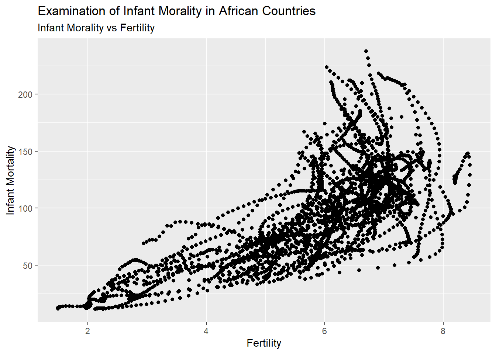
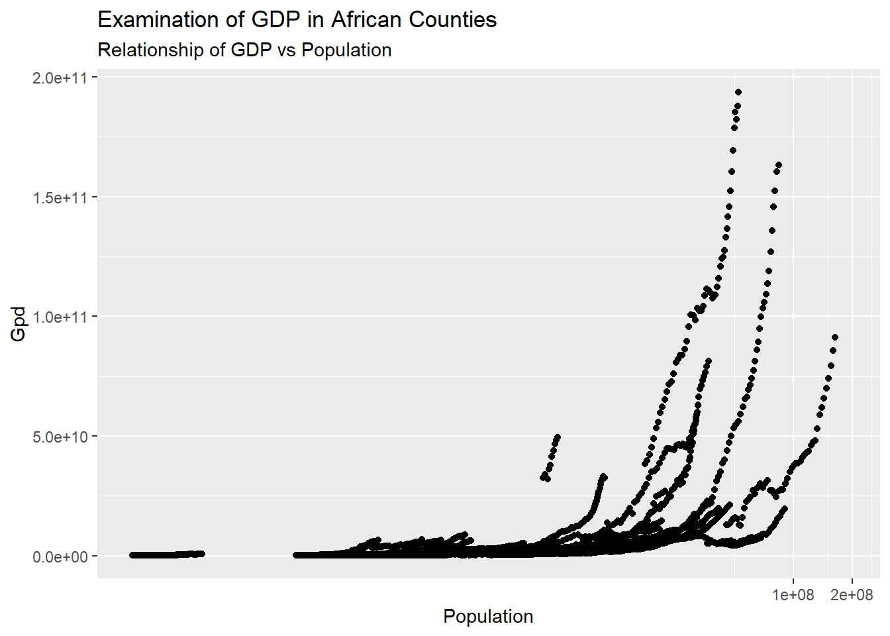

Installing package into 'C:/Users/cplay/AppData/Local/R/win-library/4.3'
(as 'lib' is unspecified)
Warning: unable to access index for repository https://github.com/cameronplayle/CameronPlayle-P2-Portfolio.git/src/contrib:
cannot open URL 'https://github.com/cameronplayle/CameronPlayle-P2-Portfolio.git/src/contrib/PACKAGES'
Warning: package 'dslabs' is not available for this version of R
A version of this package for your version of R might be available elsewhere,
see the ideas at
https://cran.r-project.org/doc/manuals/r-patched/R-admin.html#Installing-packages
Warning: unable to access index for repository https://github.com/cameronplayle/CameronPlayle-P2-Portfolio.git/bin/windows/contrib/4.3:
cannot open URL 'https://github.com/cameronplayle/CameronPlayle-P2-Portfolio.git/bin/windows/contrib/4.3/PACKAGES'
library(dslabs)
Warning: package 'dslabs' was built under R version 4.3.3
# load renv packageinstall.packages("renv")
Installing package into 'C:/Users/cplay/AppData/Local/R/win-library/4.3'
(as 'lib' is unspecified)
Warning: unable to access index for repository https://github.com/cameronplayle/CameronPlayle-P2-Portfolio.git/src/contrib:
cannot open URL 'https://github.com/cameronplayle/CameronPlayle-P2-Portfolio.git/src/contrib/PACKAGES'
Warning: package 'renv' is not available for this version of R
A version of this package for your version of R might be available elsewhere,
see the ideas at
https://cran.r-project.org/doc/manuals/r-patched/R-admin.html#Installing-packages
Warning: unable to access index for repository https://github.com/cameronplayle/CameronPlayle-P2-Portfolio.git/bin/windows/contrib/4.3:
cannot open URL 'https://github.com/cameronplayle/CameronPlayle-P2-Portfolio.git/bin/windows/contrib/4.3/PACKAGES'
library(renv)
Warning: package 'renv' was built under R version 4.3.3
Attaching package: 'renv'
The following objects are masked from 'package:stats':
embed, update
The following objects are masked from 'package:utils':
history, upgrade
The following objects are masked from 'package:base':
autoload, load, remove
# look at help file for gapminder datahelp(gapminder)
starting httpd help server ...
done
# get overview of data structure str(gapminder)
'data.frame': 10545 obs. of 9 variables:
$ country : Factor w/ 185 levels "Albania","Algeria",..: 1 2 3 4 5 6 7 8 9 10 ...
$ year : int 1960 1960 1960 1960 1960 1960 1960 1960 1960 1960 ...
$ infant_mortality: num 115.4 148.2 208 NA 59.9 ...
$ life_expectancy : num 62.9 47.5 36 63 65.4 ...
$ fertility : num 6.19 7.65 7.32 4.43 3.11 4.55 4.82 3.45 2.7 5.57 ...
$ population : num 1636054 11124892 5270844 54681 20619075 ...
$ gdp : num NA 1.38e+10 NA NA 1.08e+11 ...
$ continent : Factor w/ 5 levels "Africa","Americas",..: 4 1 1 2 2 3 2 5 4 3 ...
$ region : Factor w/ 22 levels "Australia and New Zealand",..: 19 11 10 2 15 21 2 1 22 21 ...
# summary of gapminder datasummary(gapminder)
country year infant_mortality life_expectancy
Albania : 57 Min. :1960 Min. : 1.50 Min. :13.20
Algeria : 57 1st Qu.:1974 1st Qu.: 16.00 1st Qu.:57.50
Angola : 57 Median :1988 Median : 41.50 Median :67.54
Antigua and Barbuda: 57 Mean :1988 Mean : 55.31 Mean :64.81
Argentina : 57 3rd Qu.:2002 3rd Qu.: 85.10 3rd Qu.:73.00
Armenia : 57 Max. :2016 Max. :276.90 Max. :83.90
(Other) :10203 NA's :1453
fertility population gdp continent
Min. :0.840 Min. :3.124e+04 Min. :4.040e+07 Africa :2907
1st Qu.:2.200 1st Qu.:1.333e+06 1st Qu.:1.846e+09 Americas:2052
Median :3.750 Median :5.009e+06 Median :7.794e+09 Asia :2679
Mean :4.084 Mean :2.701e+07 Mean :1.480e+11 Europe :2223
3rd Qu.:6.000 3rd Qu.:1.523e+07 3rd Qu.:5.540e+10 Oceania : 684
Max. :9.220 Max. :1.376e+09 Max. :1.174e+13
NA's :187 NA's :185 NA's :2972
region
Western Asia :1026
Eastern Africa : 912
Western Africa : 912
Caribbean : 741
South America : 684
Southern Europe: 684
(Other) :5586
# checking function of type of object gapminder isclass(gapminder)
[1] "data.frame"
# load tidyverselibrary(tidyverse)
Warning: package 'ggplot2' was built under R version 4.3.3
Warning: package 'dplyr' was built under R version 4.3.3
── Attaching core tidyverse packages ──────────────────────── tidyverse 2.0.0 ──
✔ dplyr 1.1.4 ✔ readr 2.1.4
✔ forcats 1.0.0 ✔ stringr 1.5.0
✔ ggplot2 3.5.1 ✔ tibble 3.2.1
✔ lubridate 1.9.2 ✔ tidyr 1.3.0
✔ purrr 1.0.2
── Conflicts ────────────────────────────────────────── tidyverse_conflicts() ──
✖ dplyr::filter() masks stats::filter()
✖ dplyr::lag() masks stats::lag()
✖ purrr::modify() masks renv::modify()
ℹ Use the conflicted package (<http://conflicted.r-lib.org/>) to force all conflicts to become errors
# filtering contienent variable to just Africa. I do this by using the dplyr function filter() along with pop %>%. Once this is done I can use str() and summary() to get the data structure and summariesafricadata <- gapminder %>%filter(continent =='Africa')str(africadata)
'data.frame': 2907 obs. of 9 variables:
$ country : Factor w/ 185 levels "Albania","Algeria",..: 2 3 18 22 26 27 29 31 32 33 ...
$ year : int 1960 1960 1960 1960 1960 1960 1960 1960 1960 1960 ...
$ infant_mortality: num 148 208 187 116 161 ...
$ life_expectancy : num 47.5 36 38.3 50.3 35.2 ...
$ fertility : num 7.65 7.32 6.28 6.62 6.29 6.95 5.65 6.89 5.84 6.25 ...
$ population : num 11124892 5270844 2431620 524029 4829291 ...
$ gdp : num 1.38e+10 NA 6.22e+08 1.24e+08 5.97e+08 ...
$ continent : Factor w/ 5 levels "Africa","Americas",..: 1 1 1 1 1 1 1 1 1 1 ...
$ region : Factor w/ 22 levels "Australia and New Zealand",..: 11 10 20 17 20 5 10 20 10 10 ...
summary(africadata)
country year infant_mortality life_expectancy
Algeria : 57 Min. :1960 Min. : 11.40 Min. :13.20
Angola : 57 1st Qu.:1974 1st Qu.: 62.20 1st Qu.:48.23
Benin : 57 Median :1988 Median : 93.40 Median :53.98
Botswana : 57 Mean :1988 Mean : 95.12 Mean :54.38
Burkina Faso: 57 3rd Qu.:2002 3rd Qu.:124.70 3rd Qu.:60.10
Burundi : 57 Max. :2016 Max. :237.40 Max. :77.60
(Other) :2565 NA's :226
fertility population gdp continent
Min. :1.500 Min. : 41538 Min. :4.659e+07 Africa :2907
1st Qu.:5.160 1st Qu.: 1605232 1st Qu.:8.373e+08 Americas: 0
Median :6.160 Median : 5570982 Median :2.448e+09 Asia : 0
Mean :5.851 Mean : 12235961 Mean :9.346e+09 Europe : 0
3rd Qu.:6.860 3rd Qu.: 13888152 3rd Qu.:6.552e+09 Oceania : 0
Max. :8.450 Max. :182201962 Max. :1.935e+11
NA's :51 NA's :51 NA's :637
region
Eastern Africa :912
Western Africa :912
Middle Africa :456
Northern Africa :342
Southern Africa :285
Australia and New Zealand: 0
(Other) : 0
# Now I will create two new objects, f.im and pop.gdp# f.im will consist of the variables fertility and infant mortality # pop.gdp will consist of variables population and gdpf.im <- africadata %>%select(fertility, infant_mortality)pop.gdp <- africadata %>%select(population, gdp)head(f.im)
population gdp
1 11124892 13828152297
2 5270844 NA
3 2431620 621797131
4 524029 124460933
5 4829291 596612183
6 2786740 341126765
# summary of the two new objectssummary(pop.gdp)
population gdp
Min. : 41538 Min. :4.659e+07
1st Qu.: 1605232 1st Qu.:8.373e+08
Median : 5570982 Median :2.448e+09
Mean : 12235961 Mean :9.346e+09
3rd Qu.: 13888152 3rd Qu.:6.552e+09
Max. :182201962 Max. :1.935e+11
NA's :51 NA's :637
summary(f.im)
fertility infant_mortality
Min. :1.500 Min. : 11.40
1st Qu.:5.160 1st Qu.: 62.20
Median :6.160 Median : 93.40
Mean :5.851 Mean : 95.12
3rd Qu.:6.860 3rd Qu.:124.70
Max. :8.450 Max. :237.40
NA's :51 NA's :226
# plotting fertlilty and infant mortality f.im %>%ggplot(aes(x=fertility, y=infant_mortality)) +geom_point() +labs(x='Fertility', y='Infant Mortality',title='Examination of Infant Morality in African Countries',subtitle='Infant Morality vs Fertility')
Warning: Removed 226 rows containing missing values or values outside the scale range
(`geom_point()`).

# plotting population and gdppop.gdp %>%ggplot(aes(x=population, y=gdp)) +coord_trans(x='log2') +geom_point() +labs(x='Population', y='Gpd',title='Examination of GDP in African Counties',subtitle='Relationship of GDP vs Population')
Warning: Removed 637 rows containing missing values or values outside the scale range
(`geom_point()`).

The chart imply a positive correlation between fertility and infant mortality as well as a positive correlation between population and gdp. We do see some gaps so we can isolate by grouping together population sizes. Furthermore we can group these by populations larger than 50,000
fertility infant_mortality
Min. :1.500 Min. : 11.40
1st Qu.:5.150 1st Qu.: 62.20
Median :6.170 Median : 93.40
Mean :5.852 Mean : 95.22
3rd Qu.:6.860 3rd Qu.:124.80
Max. :8.450 Max. :237.40
NA's :175
summary(pop.gdp5K)
population gdp
Min. : 51124 Min. :9.997e+07
1st Qu.: 1628278 1st Qu.:8.440e+08
Median : 5593768 Median :2.474e+09
Mean : 12274497 Mean :9.383e+09
3rd Qu.: 13917354 3rd Qu.:6.586e+09
Max. :182201962 Max. :1.935e+11
NA's :586
# recreating process for new dataf.im5K %>%ggplot(aes(x=fertility, y=infant_mortality)) +geom_point() +labs(x='Fertility', y='Infant Mortality',title='Examination of Infant Morality in African Countries',subtitle='Infant Morality vs Fertility')
Warning: Removed 175 rows containing missing values or values outside the scale range
(`geom_point()`).
# recreating process for new datapop.gdp5K %>%ggplot(aes(x=population, y=gdp)) +coord_trans(x='log2') +geom_point() +labs(x='Population', y='Gpd',title='Examination of GDP in African Counties',subtitle='Relationship of GDP vs Population')
Warning: Removed 586 rows containing missing values or values outside the scale range
(`geom_point()`).